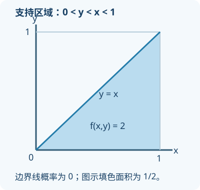

二维随机变量：联合、边缘、条件与独立
本篇配合第三章前半部分，先从二维分布表理解两变量，再过渡到连续情形。例题和练习为新编。教材扫描正文仍需逐页核对。
一、为什么需要两个随机变量？
一次试验中，我们可能同时关心两个数字。例如随机选择一个家庭，X 表示上午到店人数，Y 表示下午到店人数。只知道 X 的分布和 Y 的分布，通常还不够：上午人数多时下午是否也多，需要知道两者如何共同变化。
(X,Y) 称为二维随机变量。联合分布描述 X 与 Y 同时取值的概率；边缘分布只看其中一个变量，把另一个变量的可能情况合并；条件分布则是在已知一个变量取值之后研究另一个变量。
二、从一张联合分布表开始
假设 X、Y 都只能取 0 或 1，联合分布为：
| X 的值 | Y=0 | Y=1 | 行合计 P(X=x) |
|---|---|---|---|
| X=0 | 0.10 | 0.20 | 0.30 |
| X=1 | 0.30 | 0.40 | 0.70 |
| 列合计 P(Y=y) | 0.40 | 0.60 | 1.00 |
每个格子表示两个条件同时满足。例如 0.20 表示 P(X=0,Y=1)。所有格子的概率必须非负且总和为 1。
求 P(X=1)：不管 Y 是 0 还是 1，把 X=1 这一行相加，得到 0.30+0.40=0.70。求 P(Y=1)：不管 X 是 0 还是 1，把 Y=1 这一列相加，得到 0.20+0.40=0.60。这两个合计就是边缘分布。
三、条件分布：先固定已知条件
已知 Y=1，X=1 的条件概率为 P(X=1|Y=1)=P(X=1,Y=1)/P(Y=1)=0.40/0.60=2/3。分母是 Y=1 那一列的总概率。
相反，P(Y=1|X=1)=0.40/0.70=4/7。两个问题的已知条件不同，分母自然不同。分母必须大于零，否则不能直接用此公式。
四、判断独立：逐格比较
离散型 X、Y 独立，当且仅当对所有可能的 x、y，都有 P(X=x,Y=y)=P(X=x)P(Y=y)。只找到一格满足乘积关系，并不能证明全部独立；找到一格不满足，就足以证明不独立。
对上表，P(X=0,Y=0)=0.10，但 P(X=0)P(Y=0)=0.30×0.40=0.12，二者不相等，所以 X、Y 不独立。
独立的意思是，一个变量取值的信息不改变另一个变量的概率分布（相应条件概率有定义时）。数值不同、来自不同对象、看上去不相关，都不能单独作为独立的证明。
五、分布函数与矩形区域
二维分布函数定义为 F(x,y)=P(X≤x,Y≤y)。它累计的是平面上同时满足两个不等式的区域。对 a<b、c<d，矩形事件概率可写为：
P(a<X≤b,c<Y≤d)=F(b,d)−F(a,d)−F(b,c)+F(a,c)。
为什么最后要加一次？先从大区域减去左边多余部分和下边多余部分，左下角被减了两次，因此要补回一次。这就是二维版的“不重不漏”。端点开闭按公式保留；有点概率时不能随意更换。
六、连续型：对区域积分
若二维随机变量有联合密度 f(x,y)，某区域内的概率为该区域上对 f 的二重积分。密度必须非负，并且在整个平面上的积分为 1。联合密度某点的数值不是恰好取到那一对数值的概率。
求 X 的边缘密度时，对 Y 的所有可能值积分：f_X(x)=∫f(x,y)dy；求 Y 的边缘密度则对 X 积分。积分上下限取决于实际支持区域，不一定是固定常数；最好先画图。
例 1：单位正方形上的均匀分布。 设 0≤x≤1、0≤y≤1 时 f(x,y)=1，其他位置为 0。整个正方形面积为 1，因此总概率为 1。事件 X≤1/2、Y≤1/2 对应左下角四分之一的面积，概率为 1/4。两个边缘密度在 0 到 1 内均为 1，在其他处为 0；联合密度等于边缘密度乘积，故独立。
七、支持区域不是矩形时要小心

例 2： 设 f(x,y)=2，区域为 0<y<x<1，其他位置为 0。
这个区域是单位正方形中 y<x 的半个三角形，面积为 1/2，乘以密度 2 后总概率为 1。固定某个 0<x<1，y 只能从 0 到 x，因此 f_X(x)=∫₀ˣ2dy=2x；固定 0<y<1，x 只能从 y 到 1，所以 f_Y(y)=∫ᵧ¹2dx=2(1−y)。在三角形外密度为 0，而边缘密度乘积在部分三角形外仍大于 0，故 X、Y 不独立。
重点是先画出区域，再依据固定的变量写积分范围。不能看到 x、y 都落在 0 到 1 就把整块正方形都算进去。
八、自测与解答
1. 第一张表中求 P(X=0,Y=1) 和 P(Y=1|X=0)。
解：前者直接读格子为 0.20。后者为 0.20/0.30=2/3，分母是 X=0 这一行的合计。
2. 第一张表中 P(X=1)+P(Y=1) 是否等于 P(X=1 或 Y=1)？
解：不等。两项相加时共同格子 0.40 被算两次，所求为 0.70+0.60−0.40=0.90。
3. 例 1 的单位正方形模型中，求 P(X+Y≤1)。
解：对应正方形内直线 x+y=1 下方的三角形，面积为 1/2；密度为 1，故概率为 1/2。边界线本身在该连续模型中概率为 0。
4. 例 2 中求 P(X<1/2)。
解：对边缘密度 2x 在 0 到 1/2 积分，得到 x² 从 0 到 1/2 的变化量，即 1/4。也可用小三角形面积 (1/2)(1/2)²，再乘密度 2，得到 1/4。
学完自检
能从联合表求行列合计和条件概率；能说明独立要检查所有可能值；二维连续问题会先画区域、再决定积分范围；知道分布函数相减时为何要补回重叠部分。
参考资料
- 用户提供的《概率论与数理统计》，王丽主编，科学出版社，2026 年第一版；依据已有第三章讲义组织，教材正文仍待逐页核对。
- OpenStax, Introductory Statistics 2e, Two Basic Rules of Probability: https://openstax.org/books/introductory-statistics-2e/pages/3-3-two-basic-rules-of-probability （核对交、并及条件概率的基本关系）。